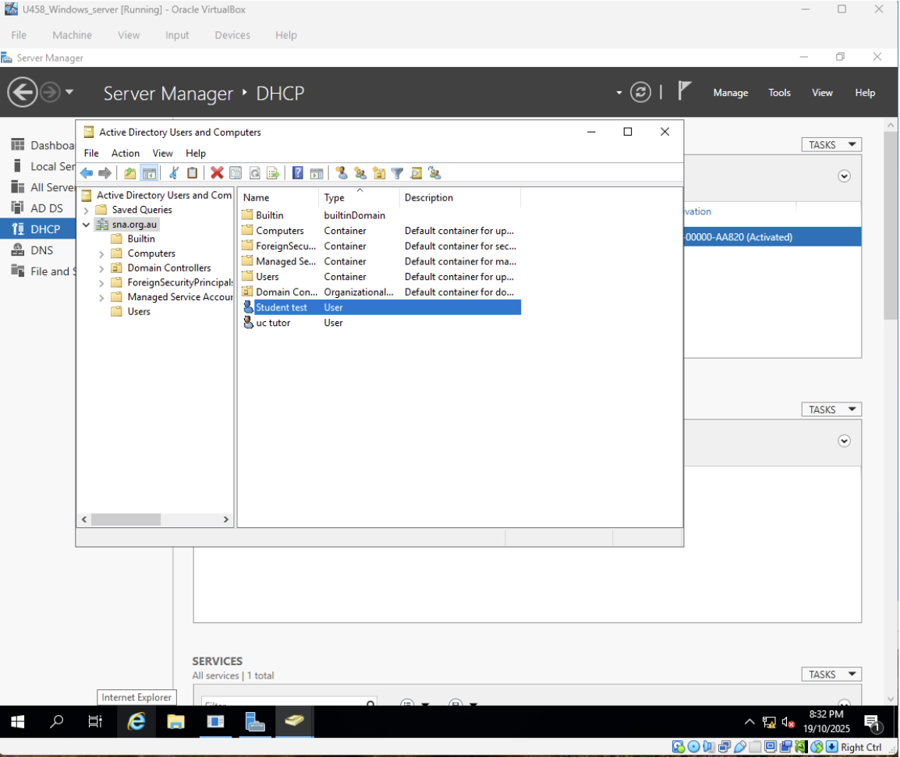
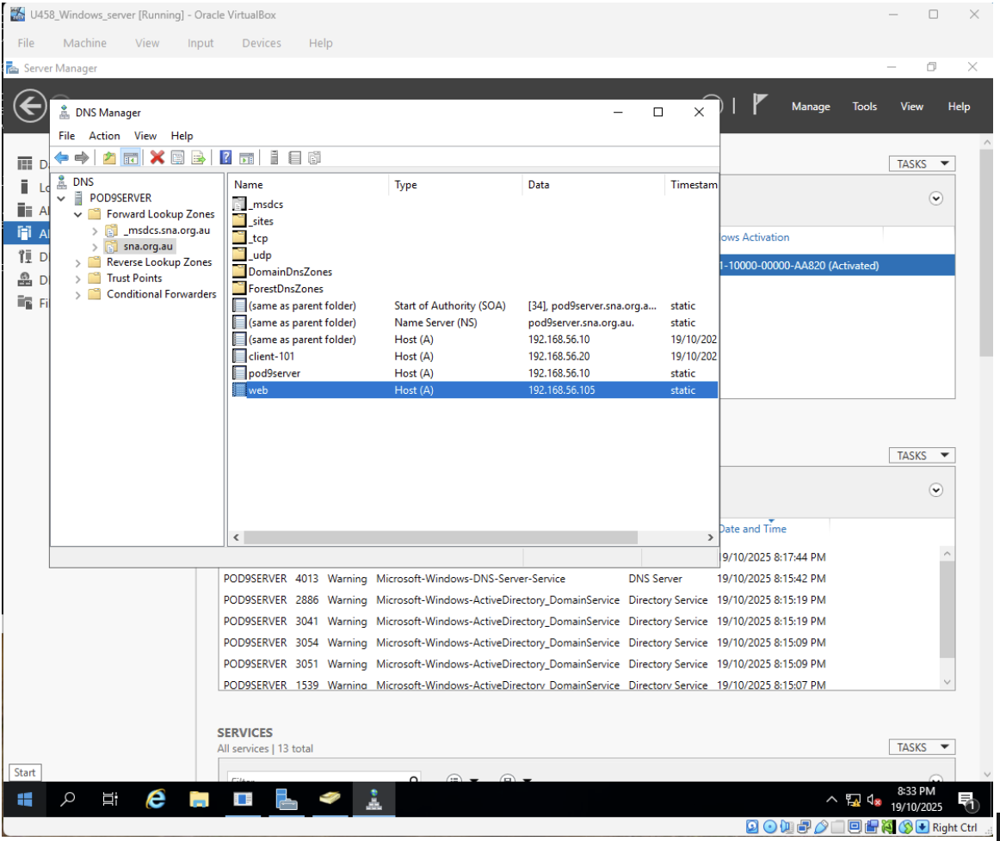
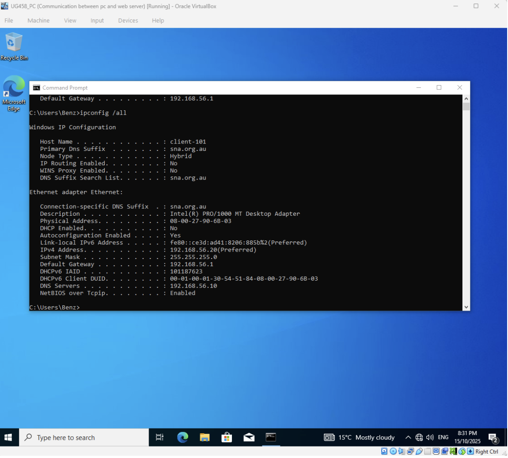

Configured a Windows Server environment with Active Directory organisational units and DHCP scopes to simulate enterprise user and network management.
Active Directory Structure

DHCP Configuration

Client IP Assignment

Skills: Active Directory, DHCP, Windows Server, System Administration